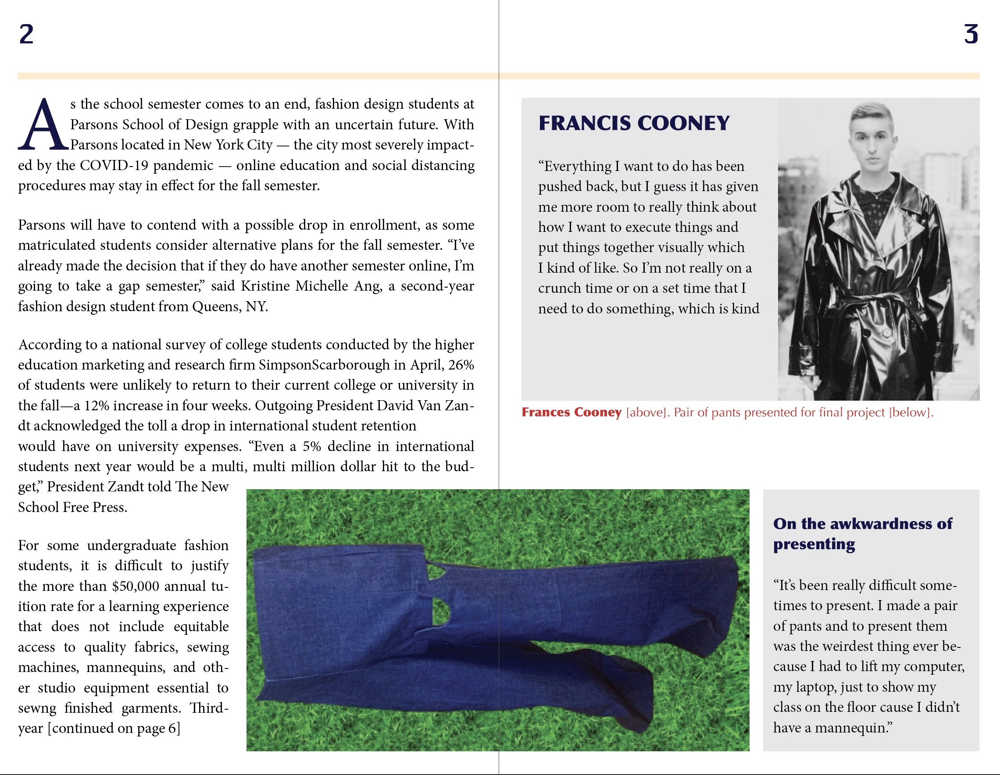
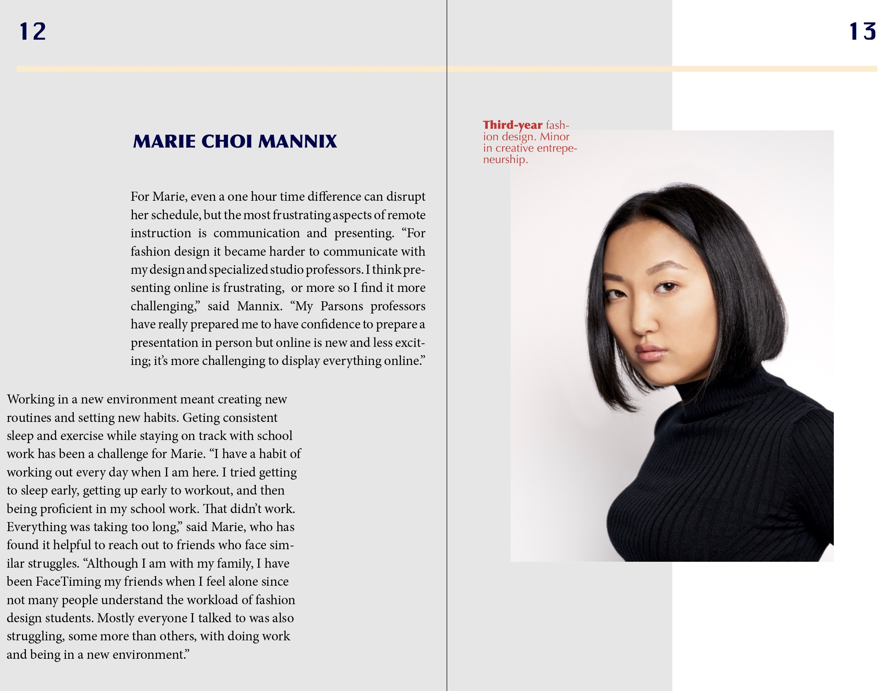
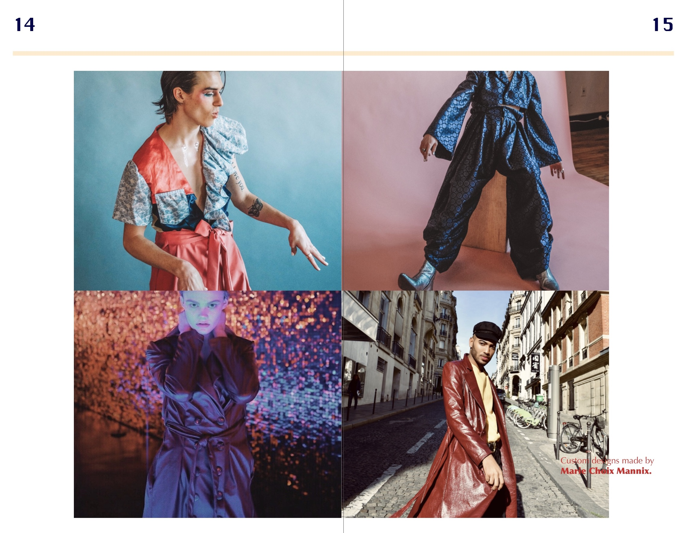

booklet
I created a 16-page booklet in Adobe InDesign based on an article I wrote on the experience of Parsons fashion students during quarantine. I included additional photos of the students I interviewed and their garment designs.


